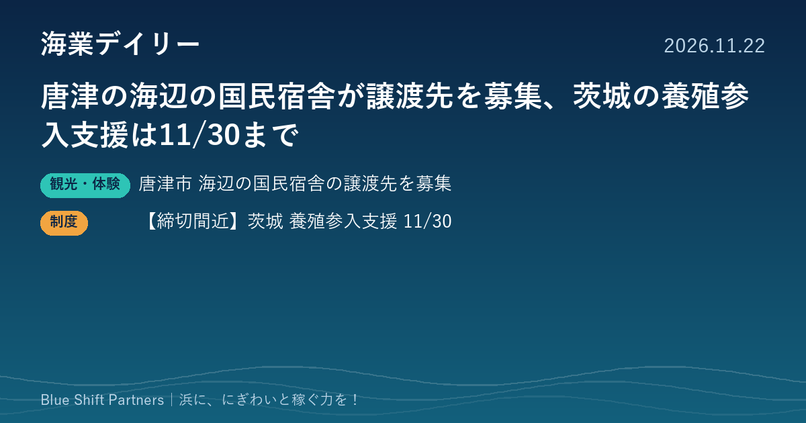

2026.11.22
唐津の海辺の国民宿舎が譲渡先を募集、茨城の養殖参入支援は11/30まで

佐賀県唐津市が、虹の松原にある国民宿舎「虹の松原ホテル」の民間譲渡先を募集しています。茨城県の養殖参入支援事業補助金（2次公募）は、企画書の提出期限が11月30日に迫っています。
佐賀県唐津市、国民宿舎「虹の松原ホテル」の民間譲渡先を募集（参加申込は2027年2月12日まで）
唐津市は、国民宿舎「虹の松原ホテル」（唐津市東唐津、平成7年建築の鉄筋コンクリート造）の建物・附帯設備などを民間に譲渡する相手を、プロポーザル方式で募集しています。応募できるのは1者単独の事業者または共同企業体で、譲渡後10年間は宿泊事業として使うことが主な条件です。建物等の最低譲渡価格は4,020,500円で、土地は国有地のため譲渡対象に含まれず、買受者が国から直接使用許可を受けて使用料を納めます。参加申込書の提出期限は2027年2月12日、企画提案書の受付は2月12日から26日までで、譲渡は2027年11月ごろの予定です。
ここがポイント：海辺の公的な宿泊施設を民間に引き継ぐ例です。自治体にとっては施設の活かし方を考える参考に、宿泊・観光の事業者にとっては海辺の宿を手がける機会として注目できます。
出典：唐津市「【令和9年2月26日申込締め切り】唐津市国民宿舎虹の松原ホテルの民間譲渡先を募集します」（2026-10-30）
【締切間近】茨城県「養殖参入支援事業補助金」2次公募、企画書は11月30日まで
茨城県は、令和8年度茨城県養殖参入支援事業補助金の2次公募で、11月30日（月）までに企画書を提出するよう案内しています。対象は県内の水産業者（漁業者・養殖業者・水産加工業者・仲買人等）とそのグループ、水産業協同組合で、新たに養殖を始める事業、新魚種への挑戦、規模拡大、蓄養などに使えます。補助率は2分の1以内・上限200万円で、霞ヶ浦北浦の水産業者等が同水域で行う事業は3分の2以内・上限500万円（テナガエビ養殖技術開発は上限100万円）です。企画書の提出前に県機関への事前相談が必要で、提出は郵送（簡易書留など記録の残る方法）か、事前相談した県機関へ提出します。
ここがポイント：養殖施設や種苗の購入費、運営費が対象経費に挙げられており、漁業者・加工業者が蓄養や新しい魚種に取り組む足がかりになります。事前相談が必要なので、検討中の方は早めに水産振興課へ連絡することをおすすめします。
出典：茨城県 農林水産部水産振興課「令和8年度茨城県養殖参入支援事業補助金（2次公募）」（2026-11-17）
宿泊施設は、浜の食や体験を「泊まって楽しむ」形にまとめる要の場所です。公的な宿の引き継ぎや養殖の新規参入のように、浜の資源を次の担い手につなぐ動きは、漁業と観光の両方の稼ぐ力を底上げする好機です。